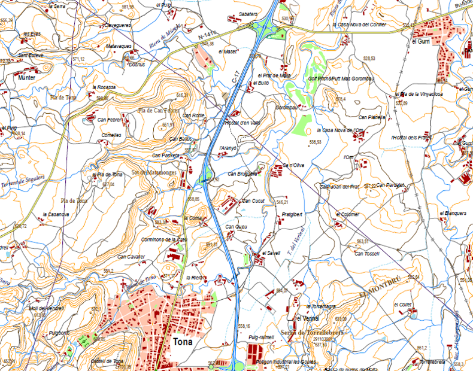
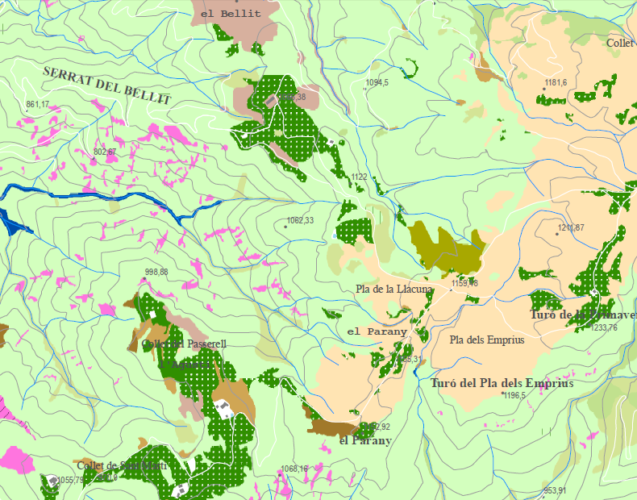

Montseny Natural Park Map Series March 2015
The following set of maps of the Montseny Natural Park were created as part of the Cartographic Module during the MS in GIS that I finished on March 2016. The purpose was to create 3 different kind of thematic maps to get familiar with cartographic design, symbology, map elements and composition.
Topographic Map
A topographic map is a type of map characterized by both natural and man-made features. It displays large-scale detail of ground relief (contour lines, landforms and terrain), drainage (rivers and water bodies), forest cover, populated areas, facilities, transportation routes (roads and railways) and administrative areas.
Download Topographic Map (43 MB)Vegetation Map
The vegetation map shows a different range of colors according to the natural vegetation or land cover within the boundaries of the Park. The categories identified are forest, brushwood, crop, pasture, grassland, tree plantation, orchard, riparian strip and rocky surface.
Download Vegetation Map (14 MB)Touristic Map

A touristic map aimed to the general public to display the most interesting and important sights of the Park such as ruins, archeological sites, churches, hermitages, lookouts, old mills, towers and fortresses, the so-called ice wells, as well as information regarding accommodation (hotel, camping or rural lodgings), restaurants and trails. The color degradation of the map background intends to demonstrate the hypsometric profile of the Park.
Download Touristic Map (26 MB)